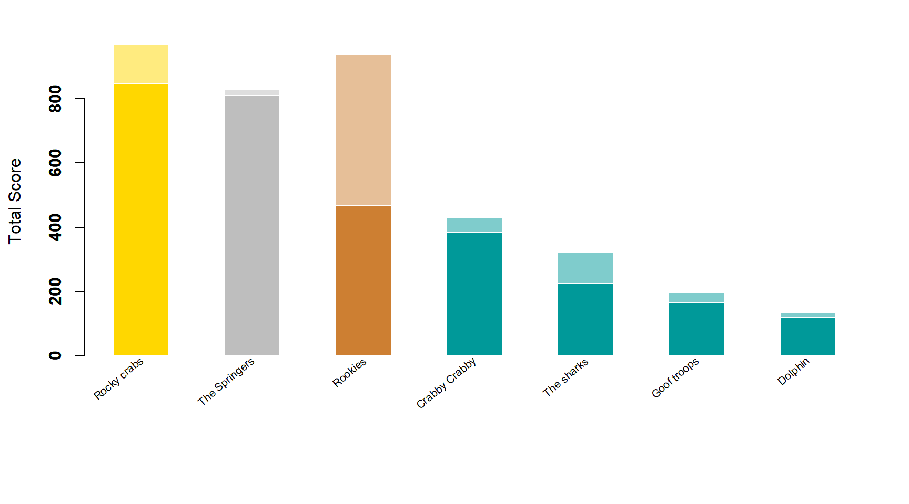

Content
You can view all the wildlife we recorded at this event on iNaturalist here.


| Records | 388 |
| Species | 111 |
| Verified species | 104 |
| Observers | 12 |
| Verified score | 4300 |
| Unverified score | 5045 |
| Top species | Aplysilla rosea - Encrusting rose sponge |
| Top species score | 50 |
Congratulations to Rocky crabs for taking the gold medal in this BioBlitz Battle! And well done to everyone for a great game and some fantastic wildlife finds.

| Species | Potential Score | Confirmed Score | |
|---|---|---|---|
| keasty69 | 60 | 970 | 848 |
| Rebecca Bowyer | 39 | 801 | 801 |
| apricotleaf | 50 | 939 | 466 |
| KW | 31 | 429 | 384 |
| trudy78 | 26 | 395 | 367 |
| Rob | 25 | 320 | 224 |
| Sarah Charles | 15 | 200 | 200 |
| big-nick- | 13 | 143 | 123 |
| Kezia Black | 11 | 133 | 119 |
| jojo496 | 6 | 77 | 63 |
| sandison2 | 6 | 68 | 50 |
| rosannajane89 | 1 | 7 | 7 |
A total of 4 species with a rarity score of 45 or higher have verified records:


Community verified records only
Click any image to view the original photo and licence details on iNaturalist.
| Name | Rarity Score | |
|---|---|---|

|
Ascidiella aspersa - European ascidian | 25 |
| Botryllus schlosseri - Star Tunicate | 12 | |
| Morchellium argus - Colonial Seasquirt | 24 | |

|
Larus argentatus - European Herring Gull | 7 |

|
Zeugopterus punctatus - Topknot | 27 |

|
Apletodon dentatus - Small-headed Clingfish | 30 |

|
Parablennius gattorugine - Tompot Blenny | 19 |

|
Liparis montagui - Montagu’s Seasnail | 41 |

|
Nerophis lumbriciformis - Worm Pipefish | 13 |

|
Ciliata mustela - Five-bearded Rockling | 16 |
| Gaidropsarus mediterraneus - Shore Rockling | 26 | |

|
Tritia reticulata - Netted Dogwhelk | 13 |

|
Ocenebra erinaceus - European Sting Winkle | 15 |

|
Nucella lapillus - Atlantic Dogwhelk | 8 |
| Trivia arctica - Northern cowrie | 20 | |

|
Littorina littorea - Common Periwinkle | 8 |

|
Littorina obtusata - Flat Periwinkle | 12 |

|
Patella pellucida - Blue-rayed Limpet | 13 |

|
Facelina auriculata - Crowned Aeolis | 14 |
| Aeolidia filomenae | 20 | |

|
Jorunna tomentosa - Velvet Dorid | 18 |

|
Berthella plumula - Side-gilled Seaslug | 17 |

|
Aplysia punctata - Spotted Seahare | 13 |

|
Tricolia picta | 50 |

|
Calliostoma zizyphinum - European Painted Top Shell | 12 |

|
Phorcus lineatus - Lined Top Shell | 10 |

|
Steromphala umbilicalis - Purple Topshell | 9 |

|
Steromphala cineraria - Grey Topshell | 11 |

|
Callochiton septemvalvis - Smooth Mail-shell | 36 |

|
Lepidochitona cinerea - Grey Mail-shell | 10 |

|
Venus verrucosa - Warty Venus Clam | 37 |

|
Clausinella fasciata - Banded Venus | 45 |

|
Dosinia exoleta - Rayed Artemis | 23 |
| Ostrea edulis - European Flat Oyster | 11 | |

|
Pecten maximus - Great Scallop | 14 |

|
Mimachlamys varia - Variegated Scallop | 15 |
| Mytilus edulis - Blue Mussel | 9 | |

|
Perforatus perforatus - Perforated Barnacle | 18 |

|
Pilumnus hirtellus - Hairy Crab | 26 |
| Xantho hydrophilus - Montagu’s Crab | 9 | |

|
Maja brachydactyla - Spiny Spider Crab | 10 |

|
Cancer pagurus - Edible Crab | 8 |

|
Carcinus maenas - European Green Crab | 7 |

|
Necora puber - Velvet Swimming Crab | 9 |

|
Pagurus bernhardus - Common Hermit Crab | 9 |

|
Galathea squamifera - Black Squat Lobster | 18 |

|
Porcellana platycheles - Hairy Porcelain Crab | 10 |

|
Pisidia longicornis - Long-clawed Porcelain Crab | 16 |

|
Melita | 100 |

|
Idotea balthica - Baltic Isopod | 21 |

|
Harmothoe imbricata - Fifteen-scaled Worm | 29 |
| Eulalia clavigera - Emerald green paddle worm | 16 | |

|
Spirorbis spirorbis - Coil Worm | 17 |

|
Spirobranchus triqueter - Keeled Tubeworm | 14 |

|
Spirobranchus lamarcki - Lamarck’s Christmas Tree Worm | 28 |

|
Sabellaria alveolata - Honeycomb Worm | 14 |
| Anemonia viridis - snakelocks anemone | 8 | |

|
Actinia equina - Atlantic Beadlet Anemone | 8 |
| Actinia fragacea - Strawberry Anemone | 10 | |

|
Bunodactis verrucosa - Gem Anemone | 13 |

|
Urticina felina - Dahlia Anemone | 13 |
| Candelabrum cocksii | 31 | |
| Asterina gibbosa - Cushion Star | 9 | |

|
Asterina phylactica - small cushion star | 27 |

|
Amphipholis squamata - Dwarf Brittle Star | 13 |

|
Ophiothrix fragilis - Common Brittle Star | 11 |

|
Hymeniacidon perlevis - crumb-of-bread sponge | 12 |

|
Aplysilla rosea - Encrusting rose sponge | 50 |

|
Grantia compressa - purse sponge | 33 |

|
Lineus longissimus - Bootlace Worm | 28 |

|
Leptoplana tremellaris | 39 |
| Electra pilosa - Hairy Sea-mat | 16 | |

|
Membranipora membranacea - kelp lace bryozoan | 18 |

|
Cryptosula pallasiana - Keyhole Bryozoan | 28 |

|
Watersipora subatra - Red Ripple Bryozoan | 20 |

|
Chaetomorpha linum - Sea Hair | 49 |
| Ulva intestinalis - Gutweed | 9 | |

|
Ulva lactuca - Broadleaf Sea Lettuce | 10 |

|
Grateloupia turuturu - Devil’s Tongue Weed | 25 |

|
Lomentaria articulata - Bunny Ears | 23 |

|
Osmundea pinnatifida - Pepper Dulse | 14 |

|
Asparagopsis armata - Harpoonweed | 23 |

|
Dilsea carnosa - Red Rags | 27 |

|
Mastocarpus stellatus - false Irish moss | 18 |
| Calliblepharis jubata - False eyelash weed | 32 | |

|
Furcellaria lumbricalis - Clawed Forked Weed | 26 |

|
Chondrus crispus - Irish Moss | 10 |

|
Corallina officinalis - Common Coralline | 9 |

|
Lithophyllum - encrusting coralline algae | 16 |

|
Lithothamnion corallioides - Maerl | 34 |

|
Mesophyllum lichenoides - pink plates | 32 |

|
Hildenbrandia rubra - rusty rock | 28 |

|
Palmaria palmata - Dulse | 14 |

|
Halopteris scoparia | 41 |

|
Dictyota dichotoma - Forked ribbons | 31 |

|
Scytosiphon lomentaria - Beanweed | 27 |

|
Saccorhiza polyschides - Furbellow | 13 |

|
Himanthalia elongata - Thongweed | 11 |

|
Ericaria selaginoides - Rainbow Wrack | 22 |

|
Sargassum muticum - Japanese Wireweed | 10 |

|
Fucus serratus - Saw Wrack | 8 |

|
Fucus distichus - Rockweed | 27 |

|
Saccharina latissima - Sugar Kelp | 12 |
| Laminaria digitata - Oarweed | 12 |